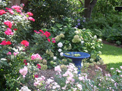

Services
Landscape Design
Myrtle Beach
Design and
bid work for
installations includes garden restoration and renovations for
commercial as well as residential properties. Turn key installation can include grading,
drainage, irrigation, fencing, and lighting as
well as any required plantings. Driveway and walkways can also
be designed.
The Southern garden can provide beautiful color in every season. Color and
fragrance are traditional elements in a southern garden. Because there is so much
color and texture in the Southern garden, the garden often becomes a source for flowers and
foliage both useful in the home in floral arrangements, and as a home for
our beautiful birds and butterflies.

Landscape Design
Murrells Inlet
Proper and efficient installation is important on any site. We
are well equipped for the tasks we take on; so the work can be accomplished in a timely
manner and will become established and continue to grow in beauty over the
years. All work is guaranteed for a year. We are diligent in assuring
that the
plantings receive proper care; so training the owner to understand the plant's needs is part
of our turn key price. We don't do maintenance ourselves but do impart
verbally and in writing what is required.
Any
design work generated from this office is created by trained landscape
designers. We also have a trained designer in the field in case some
last minute changes occur (and they usually do).
Bid work is a large part of work generated in this office. We
are interested in bidding work from Wilmington, NC to
Charleston, SC and inland to Florence. The bulk of our work is performed
in the counties of Horry and Georgetown. We would travel to
perform work ranging from $25,000 and up. |